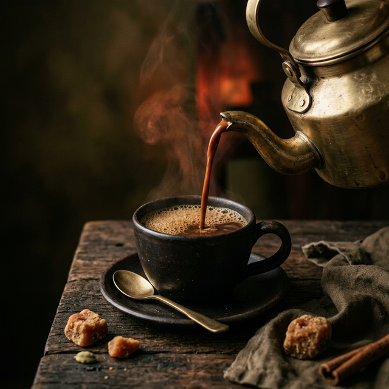
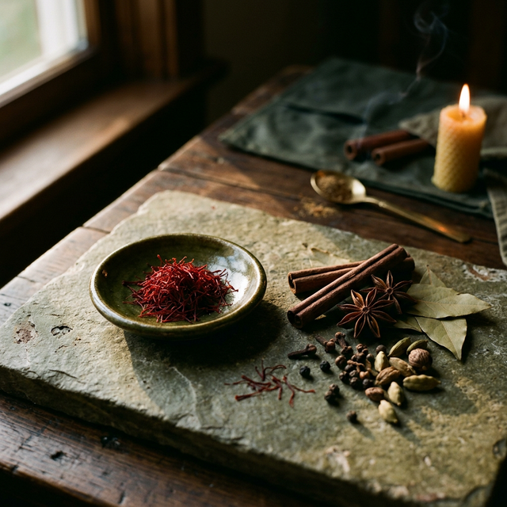

No. 01 / Original Kadak
The unfiltered classic. A remarkably bold brew commanding attention with prominent malty notes.
Est. Since Forever in Tradition
Discover the uncompromised essence of kadak chai. Small-batch selections honoring the deep-rooted rituals of India, curated for the refined palate.

The Manifesto
Virasat translates to heritage. We exist as custodians of the authentic kadak brew. Refusing commercial shortcuts, we source exclusively from heritage estates to preserve the rich, robust flavor profiles that defined an era.
Read the ArchiveOur blends undergo rigorous tasting to ensure a balanced extraction of tannins, malty sweetness, and aromatic spice.
The Virasat Reserve
The unfiltered classic. A remarkably bold brew commanding attention with prominent malty notes.

An intricate melange of crushed cardamom, clove, and dried ginger sourced from the Malabar coast.
Sourced from elevated terrains for a delicate, premium golden hue and subtle floral undertones.
A robust, full-bodied black tea base cultivated in the region's most historic estates.
Intensely aromatic green pods offering a natural, camphor-like sweetness to balance the boldness.